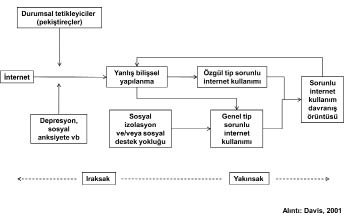

Bağımlılık sinsice yaklaşır. Her adımda "ben bağımlı olmam" sayıklamalarıyla, bağımlılığa koşar insanlar...
Sorunlu İnternet Kullanımının Bireysel Gelişim Süreci
Sorunlu internet kullanımını anlamada psikolojideki bilişsel davranışçı model yeni yöntemler sunmaktadır. Bilişsel davranışçı model, sorunlu internet kullanımının sorunlu düşüncelerden ve bu bilişlerle ilişkili uyumsuz yanıtı pekiştiren davranışlardan kaynaklandığını ileri sürer (Davis, 2001).
Sorunlu internet kullanımının temel belirtileri genellikle duygusal veya davranışsal olarak tanımlanmış olsa da, düşünce biçiminden kaynaklanan belirtilerinin sıklıkla bu duygusal ve davranışsal belirtilerden önce ortaya çıktığı, hatta sıklıkla bu belirtilere neden olduğu iddia edilebilir.
Biraz Teorik Bilgi...
Mantık açısından, neden olan faktör (N), belirtilerin (B) ortaya çıkması için gereklidir. Belirtilerin oluşması için nedenlere gerek vardır. Ama her nedensel faktör belirtilere yol açmaz. Arada katkı sağlayan faktörler de vardır. Bunlar belirtilerin oluşması için neden kadar etkili değildir ama belirtilerin ortaya çıkmasını kolaylaştırır. Belirtiler de sorunu oluşturur.
Örneğin uykusuzluk, halsizlik belirtisi için nedensel bir faktördür. Eğer kişi alkol aldıysa, bu halsizliğin daha da artmasına neden olacağı için, alkol burada katkıda bulunan faktör olarak yer alır.
Belli belirtilerin ortaya çıkmasına neden olan nedensellik sürecinde, bazı belirtiler bu sürecin sonundayken (yakınsak), bazıları ise bu sürecin başındadır (ıraksak). Bir örnek olarak huzursuzluk duygusunu ele alalım. Huzursuzluk duyma sırasında kalp atımında hızlanma, terleme, ağız kuruluğu gibi belirtiler görülebilir. Burada yakınsak nedenler bir stres, tehlike veya bir sorundur. Iraksak nedenler arasında ise yetersiz uyku, açlık olabilir.
Iraksak nedenler, aslında belirtilerin gelişimine katkıda bulunsa da nedensellik açısından ayrı gibi görünür. Yani, uykusuzluk, huzursuzluk gelişimi için ıraksak bir neden olabilir. Belirtilerin gelişimine katkısı olsa da, ne belirtilerin ortaya çıkmasına neden olacak kadar yeterlidir, ne de nedensel açıdan belirtilerin ortaya çıkmasıyla yakından ilişkilidir. Bunun tam tersini düşünürsek, stres içeren bir durum huzursuzluk belirtilerinin ortaya çıkması için yakın ve yeterli bir nedendir. Huzursuzluğun fiziksel belirtilerini de alevlendirebilir ve kendi başına huzursuzluğa neden olabilir.
Çarpıtılmış düşünce biçimi ve düşünce süreçleri sorunlu internet kullanımı belirtilerinin ortaya çıkmasında yakınsak bir neden olabilir (Davis, 2001).
Sorunlu İnternet Kullanımı Nasıl Gelişiyor?
Sorunlu internet kullanımına ilişkin süreç tabloda özetlenmiştir (Davis, 2001).
Psikopatoloji
Sorunlu internet kullanımının "bilişsel-davranışçı modeli"nde, altta yatan psikopatolojik yatkınlıktır. Birçok çalışmada, aşırı internet kullanımı ile depresyon, sosyal anksiyete ve madde bağımlılığı gibi psikopatolojik vakalar arasında bir ilişki tanımlanmıştır.
İnternet bağımlılığının bilişsel davranışçı modeli, psikopatolojik durumun internet bağımlılığı için gerekli ve ıraksak bir neden olduğunu öne sürer. Yani, psikopatolojik durum, sorunlu internet kullanım belirtilerinin ortaya çıkması için gereklidir. Ancak şu da belirtilmelidir ki, altta yatan psikopatolojik yatkınlık, kendi başına internet bağımlılığının oluşmasına neden olmaz. Altta yatan psikopatolojik yatkınlığın kalkması internet bağımlılığının gelişimini engeller gibi görünebilir. Eğer bir birey depresyondaysa ve internet bağımlılığı belirtileri de varsa, tedavinin bağımlılık yerine depresyona odaklanması gerekmez mi? Yanıt "hayır"dır. Psikopatolojik yatkınlık, kişiyi sadece sorunlu internet kullanımına eğilimli hale getirir.
Durumsal Tetikleyiciler (Pekiştireçler)
Kişinin internette yeni bir teknolojiyle (veya şeyle) tanışması önemlidir. Bu internette pornografiyi ilk keşfettiği zaman, ilk kez bir açık artırma sitesiyle karşılaştığı zaman, internette hisse alım satımı yapılabildiğini keşfettiği zaman veya sohbet odasına ilk girdiği zaman olabilir.
Bunlara maruz kalmak internet bağımlılığının ıraksak ve gerekli nedenleri arasında sayılabilir. Bu nedenler kendi başına belirtileri çoğaltmaz, ancak katkıda bulunur, bu olay sorunlu internet kullanımının gelişimsel boyutunda bir katkı görevi görür.
Bu bir pekiştirme sürecidir. Birey internetin yeni bir özelliğini denerken birbiri ardına gelen yanıtlar bu süreci pekiştirir. Eğer alınan yanıt olumlu ise, bu bireyin davranışının pekiştiği anlamına gelir. Birey ilk seferdeki olumlu duyguyu tekrar almak için, aynı aktiviteyi tekrar tekrar yapmaya koşullanır. Buna "edimsel koşullanma" denir.
Bu edimsel koşullanma, birey benzer bir fizyolojik tepkiye ulaşmak için yeni teknolojiler arayana kadar devam eder. Normal koşullanma sürecinde, ilişkisel bir yer değiştirme meydana gelir ve koşullanmış bir uyaranla ilişkilenen her uyaran, ikincil pekiştirmeye elverişlidir. Açıklamak gerekirse, internete bağlanan bilgisayarın sesi veya klavyenin tuşlarına basarken çıkan ses, hatta internete bağlanılan yerdeki koku bile koşullanılmış bir olumlu tepkiyle sonuçlanabilir. Bu pekiştireçler, sorunlu internet kullanımının gelişimini ve sürdürülmesini kolaylaştırır.

Düşünce Biçimleri ve Süreçleri
İnternet bağımlılığı olan bir birey genelde çarpıtılmış bilişlere sahiptir (biliş: bilgiyi işleme, anlama ve çıkarım yapmayla ilgili düşünce süreci). Bu bilişler, sorunlu internet kullanımıyla ilişkili olan belirtilere neden olabileceğinden, yakınsak nedenler arasında sayılabilir.
Uyumsuz bilişler iki alt kategoride tanımlanabilir: kişinin kendisiyle ilgili görüşleri ve dünyayla ilgili görüşleri. Kişinin kendisiyle ilgili görüşleri tekrarlayıcı bir biliş tarzıyla yönlendirilebilir.
Kişi tekrarlayıcı biçimde, internet kullanımını ve yol açtığı sorunları düşünmeye başlayabilir. Kişinin neden interneti aşırı kullandığını anlamaya çalışmasıyla ilgili düşünceleri, sorunlu internet kullanımıyla ilgili konuları araştırması ve arkadaşlarıyla aşırı internet kullanımıyla ilgili konuşması bu kapsamda değerlendirilebilir. Bu tip tekrarlayıcı düşünceler, çözüme yönelik adım atmak gibi davranışları engelleyerek psikopatolojik durumun devamına veya kötüye gitmesine neden olabilir. Dahası, kişinin sürekli bunları düşünmesi de, kişinin internetle ilgili anılarını hatırlamasına neden olarak internet bağımlılığı döngüsünün devamına yol açar.
Kişinin kendisiyle ilgili diğer bilişsel çarpıtmalar arasında kendinden emin olamamak, kendine güven duygusunda düşüklük ve kendine yönelik olumsuz değerlendirme sayılabilir. Kişi kendine dair olumsuz bir değerlendirmeye sahiptir ve zararsız bir araç olan interneti daha olumlu tepkiler almak için kullanır. Kişinin kendisiyle ilgili bilişleri "ben sadece internette iyiyim", "internet dışında değersizken, sanal ortamda değerli bir insanım" ve "internet dışında başarısızım" gibi düşünceleri kapsar.
Dünyayla ilgili bilişsel çarpıtmalar, belirli olayları genellemeyi içerir. Diğer bir deyişle, birey, "internet bana saygı duyulan tek yer", "beni sanal ortamın dışında kimse sevmiyor", "internet tek arkadaşım" veya "internet dışında insanlar bana kötü davranıyor" diye düşünebilir.
Bu hep veya hiç düşünme biçimi bireyin internet bağımlılığının kötüye gitmesine neden olan bir bilişsel çarpıtma diye düşünülebilir. Bu çarpıtmalar, internetle ilgili bir uyaran ortaya çıktığında otomatik olarak akla gelir. Bu yüzden, bir sohbet odasına girer girmez, birey otomatik olarak (ve istemeden) bu bilişleri yaşamaya başlar. Bunun gibi uyumsuz düşüncelerin sonucu ise genel veya özel sorunlu internet kullanımıdır.
Özgül Tip Sorunlu İnternet Kullanımı
Özgül tip sorunlu internet kullanımı, internetin belirli özelliklerinin aşırı veya kötüye kullanımıdır. Bunlar açık artırma siteleri, pornografi, çevrimiçi hisse servisler ve diğerleri olabilir. Özgül tip sorunlu internet kullanımının daha önce var olan bir psikopatolojik durumun çevrimiçi eylemle bir araya gelmesinin sonucu olduğu varsayılmaktadır. Bu yüzden, aksi durumda patolojik kumar oynayan biri olacakken, internette kumar oynandığını keşfetmesiyle özel tip sorunlu internet kullanımının belirtilerini gösterebilir.
Buna benzer bir senaryo da, pornografi sitelerini kullanan bireyler için geçerli olabilir. Birey internetin bu yönünü keşfedince, aşırı internet kullanmaya başlar. Bu da özgül tip sorunlu internet kullanımı diye nitelenmelidir. Birçok çalışma çevrimiçi zorlayıcı cinsel dürtülerin sorunlu internet kullanımının gelişmesinin temel öncüllerinden olduğunu göstermiştir. Bu pornografinin uyaran-yanıt durumu oluşturması anlamında bilişsel davranışçı modeli desteklemektedir.
İnternet kullanıcıları, internette pornografi içeren siteleri hemen bulurlar ve bunu bir pekiştireç olarak kullanırlar. Bu davranışsal ilişki güçlenir ve belirgin uyaranlara olan ihtiyaç artar. Sonuç olarak kişi özgül tip sorunlu internet kullanımı belirtileri göstermeye başlar. Ancak, şunu da belirtmekte fayda var ki, her kumar oynayan veya pornografi düşkünü özgül tip sorunlu internet kullanımı belirtisi göstermez.
Genel Tip Sorunlu İnternet Kullanımı
İnterneti her işleviyle birlikte kullananlar ise daha farklıdır. Genel tip sorunlu internet kullanımına yol açan temel unsur bireyin sosyal bağlamıyla ilişkilidir. Daha ayrıntılı ifade etmek gerekirse, aile ya da arkadaşlar, alınan sosyal desteğin yokluğu ve/veya sosyal izolasyon genel tip sorunlu internet kullanımına yol açar.
Genel tip sorunlu internet kullanımı internette hiçbir amaç olmadan veya sohbet odalarında aşırı zaman geçirmeyi içerir. Bu bireyler e-postalarını sürekli kontrol ederler veya tüm günlerini ilan panolarına cevap vererek geçirirler.
Oyalanma genel tip sorunlu internet kullanımının gelişmesinde veya sürdürülmesinde çok önemli bir rol oynar. Genel tip sorunlu internet kullanımı uygulanan insanlar sorumluluklarından kaçınmak için yine interneti kullanırlar. Boşa giden bu zaman, sorumluluklar yerine getirilmedikçe ve baskılar arttıkça, günlük yaşamlarında ciddi sorunlara yol açar.
Genel tip sorunlu internet kullanımı olan bireylerin patolojik durumları oldukça sorunludur ve internetin yokluğunda var olmak bile istemezler. Muhtemelen bağımlık öncesinde çeşitli psikopatolojik, hatalı düşünce biçimlerine sahiptirler ve sosyal açıdan içedönüktürler. Ancak endişelerini ifade etme yolu bulamamışlardır. İnternet sosyal bağlamda üstlendiği rolle onlar için, akla gelebilecek en uç seviyelerde iletişim aracı haline gelir ve kişinin dış dünyaya açılan penceresi olur.
Genel tip sorunlu internet kullanımı toplumsal açıdan büyük bir tehlike oluşturabilir. Aslında, internet olmasaydı, bu insanlar bu tip bir davranış sergilemeyeceklerdi. Bu durumda, önceden var olan psikopatolojik sorunlarının, diğer sorunlu davranışlara yol açacağı söylenebilir. Ancak internet bu kişiler için bir stres faktörü haline gelir ve var olan durumlarını kötüleştirebilir.
Sorunlu İnternet Kullanımı Belirtileri
Sorunlu internet kullanımı belirtileri, daha önceki çalışmalarda ortaya konan belirtilere benzese de (Young, 1996), bilişsel-davranışçı modelde vurgu bilişsel belirtilerdedir. Bunlar, internetle ilgili takıntılı düşünceler, azalmış dürtü kontrolü, internet kullanımından vazgeçememe ve en önemlisi kişinin internetin tek arkadaşı olduğuna inanmasıdır. Kişi internetin kendisiyle ve dünyayla ilgili kendini en iyi hissettiği tek yer olduğunu düşünür.
Diğer sorunlu internet kullanımı belirtileri arasında kişinin çevrimdışıyken bile interneti düşünmesi, çevrimiçi olma zamanını beklemesi ve internetle ilgili harcamalara çok para ayırması sayılabilir. Sorunlu internet kullanımı olan birey, ona sorunlu internet kullanımı başlamadan önce keyif veren aktivitelerde daha az zaman harcamaya başlar. Bunlar artık ona eğlenceli gelmemektedir.
Diğer bir zorluk ise, kişinin çevrimiçi arkadaşlarını tercih etmesi ve kendini gerçek arkadaşlarından soyutlamaya başlamasıyla ortaya çıkar. Bu sorunlu davranış, kişiyi sosyal açıdan yalnız bırakarak, internet bağımlılığı döngüsüne ekleme yapar. Sonuçta kişi çevrimiçi geçirdiği zamanla ilgili suçluluk duymaya başlar. Sıklıkla, arkadaşlarına internette geçirdikleri vakitle ilgili yalanlar söyler ve internette geçirdikleri vakti sır olarak saklar.
Kişi yaptığı şeyin sosyal açıdan kabul edilemez olduğunu bilse de, bunu durduramaz. Bu da kendilik değerinin azalmasına ve sorunlu internet kullanımı belirtilerinin artmasına neden olur.
Özet
Psikopatolojik etkenler sorunlu internet kullanımının gelişimine hız verir. Yeni bir şeyler bulma heyecanı ve diğer pekiştireçler, internet kullanımını artırır. Bilişler ise hem sorunlu internet kullanımı gelişiminde, hem de devamlılığının sürmesinde rol oynar. Bilişsel çarpıtmalardan ve pekiştireçlerden oluşan bir kısırdöngü sorunlu internet kullanımı belirtilerini ve zamanla internetle ilişkili olumsuz sonuçları artırır.
Günlük Kullanımdan Sorunlu Kullanıma Geçiş
Sorunlu internet kullanımı düşünce yapısından ve davranış örüntülerinden kaynaklanır; bu düşünceler çeşitli davranışların derinleşmesinde veya uyumsuz davranışların kalıcı hale gelmesinde rol oynar.
Bazı görüşlere göre sorunlu internet kullanımı çevrimiçi ortamdaki eylemleri kontrol etmede güçlük olarak nitelenir ve genellikle aşağıdaki beş özellikle tanımlanır:
1. Kişi internet kullanımını sonlandırmaya niyetlense de, buna devam eder.
2. İnternet kullanımı kişinin düşünce ve davranışlarını yönetir.
3. İnternet kullanımı imkânsız hale geldiğinde kişi hoş olmayan duygular hisseder.
4. İnterneti olumsuz duygulardan kaçmak için kullanır.
5. İnternet kullanımı kişinin başkaları veya kendisiyle çatışmasına neden olur.
Hem günlük internet kullanımı, hem de sorunlu internet kullanımı kişilerin sosyal bağlamlarıyla ilişkilidir. Yani aile ve arkadaşlardan sosyal destek görememe ve/veya arkadaşları tarafından sosyal açıdan tecrit edilme kişinin günlük kullanımdan sorunlu internet kullanımına geçmesine yol açar, çünkü internette bulunan sosyal ilişkiler ve pekiştirme kişinin sanal sosyal yaşamında kalma ihtiyacının artmasına neden olur.
Ergen, interneti sorunlu bir biçimde kullanmaya başladığında, günlük yaşamdaki sosyal ilişkileri sürdürecek zaman ve enerji bulamayacaktır, bu da onun yalnızlık, depresif ruh hali ve düşük benlik algısı yaşama riskini artıracaktır.
İnternet Nasıl Bağımlı Yapıyor?
Son yıllarda, internetin ve özellikle sanal iletişimin ergenlerin yaşamı üzerindeki etkisi önemli tartışmalara yol açmıştır. Araştırmalarda internetin ergenlerin günlük yaşamları etkisi konusunda çelişkili sonuçlara ulaşılmıştır.
İnternetin kendisini ve içeriğini incelemenin yanında, internet kullanıcılarının gereksinimlerini ve internetin bu gereksinimleri nasıl karşıladığını bilmek de gereklidir.
Bireyin internet bağımlısı olmasında birtakım doğrudan ve dolaylı nedenlerden söz etmek mümkündür. İnterneti kullanım amacı ve interneti kullanım süresinden kaynaklanan nedenler internet bağımlılığında doğrudan etkiler olarak gösterilebilir.
Bireyin psikolojik ve sosyolojik etkenler nedeniyle internete yönelmesi internet bağımlılığında dolaylı nedenler olarak ele alınabilir.
İnternet bağımlılığının nedenleri üstünde durmak gerekirse, aşağıdaki etkenleri ele almak yararlı olacaktır.
Bir "İlaç" Olarak İnternet
Bağımlı kişiler için, internette elde ettikleri başarı ne kadar yanıltıcı veya anlık olsa da, "bir çeşit başarma" anlamına gelir. Bağımlıklarından elde ettikleri zihinsel haz yüzünden, o davranışları daha sık gerçekleştirmeye başlarlar. Örneğin, bir alkolik hayatındaki stresin daha yoğun olduğu zamanlar daha çok içki içer veya aşırı yemek yeme sorunu olan biri gergin olduğu zamanlar daha çok yer.
Her iki durumda da, dürtüsel davranış altta yatan duygusal gerginliği azaltmaya yarar ve bu gelecekte aynı davranışı sürdürmesi için ödül yerine geçer. Buna benzer olarak, internet bağımlılarının zihinsel gerginliklerinden ve hayatlarındaki çalkantıdan kurtulmak için bilgisayara yöneldikleri iddia edilir.
İnternet bizim düşündüğümüz kadar ikiyüzlü değildir, kişinin ruh halini değiştirme kapasitesi vardır. İnternet bağımlılarının önemli bir kısmı, interneti "ruh hallerini değiştirmek ve kaçmak" için kullanırlar. Böyle durumlarda, bu kişilerin bilgisayarı bir araç gibi değil, hayatlarındaki sorunlarla baş edebilmek için psikolojik bir kaçış gibi kullandıkları söylenebilir. Bir anlamda tedavi olmak için ilaç niyetine interneti kullanırlar. Bağımlılık, bağımlı için işlevsel bir amaca hizmet ettiğinden, bu yakınlık ciddi boyutlara ulaşabilir.
İnternet bağımlılarının, birçok şeyden kaçmak için internet kullandıkları bilinmektedir. Çoğu hayatlarında yüzleşmek istemedikleri bazı şeylerden kaçar. Ama kişi kaçtığını inkâr eder. Şanslı olanlar bir süre sonra kaçtıklarını fark ederler. Şanslı diyorum, çünkü bir şeylerden kaçtıklarının farkına varanlar ve bunu yenmek isteyenler zaman içinde düzelirler, yaşam kaliteleri de yükselir. Bunlara örnekler aşağıda verilmiştir:
1. Yalnızlık
2. Evlilikten duyulan memnuniyetsizlik
3. İş stresi
4. Sıkıntı ve kaygı
5. Depresyon
6. Finansal sorunlar
7. Fiziksel görünümle ilgili güvensizlik
8. Diğer bağımlılıklardan iyileşme dönemindeki sıkıntılar
9. Sınırlı sosyal yaşam
Kaygı sorunları veya bazı fobiler bireyleri internet ve bilgisayar başına tam anlamıyla hapsetmektedir. Bu korku ve kaygılarla yüzleşmekten kaçınmak için bilgisayar bir araç olabilmektedir. Sosyal fobisi olan bir birey için toplumsal ortamlardan kaçmanın ama yine de sosyal kalabilmenin yolu bilgisayar ve internet olabilmektedir.
Sürekli sıkıntı, kaygı ve heyecan yaşayan bireyler için bilgisayar veya internet birer dikkat çelici görevi üstlenebilmektedir. Dikkatlerinin başka bir odağa yoğunlaşması, bireyin içsel sorunlarını yaşamasını veya en azından şiddetini azaltabilmektedir. Böyle bir durumda internetin başından kalkmak hastalıkla yüzleşmek olduğu için, kişi gönüllü olarak ekran başına hapsolmaktadır.
İnternet ve bilgisayar stresle başa çıkma yoludur. Aynı televizyonda zap yapar gibi, web sörfü yapmak, mesajlarına veya Facebook duvarına bakmak stresi azaltır.
Yirmi iki yaşındaydı ilk karşılaştığımızda. Genelde evde ve bilgisayar başındaydı. Dışarı çok az çıkıyordu. Tercihinin bu olduğunu söylüyordu. Herkesin bir yaşam tercihi olduğunu söylüyor, kendisinin bu tercihine de saygı gösterilmesini bekliyordu. Annesinin zoruyla gelmişti ve herhangi bir yardım istemiyordu.
Bir yıl sonra üniversiteyi kazandı. Aslında ailesinin zoruyla sınava girmişti. Ama üniversiteye başlayınca okulu sevmişti. Ancak bu sefer okula gitmemeye başlamıştı. Ailesi bundan rahatsız olduğu için tekrar benimle görüşmesini istemişti.
Bu görüşmede sorunun internet aşkından başka bir şeyler olduğu da ortaya çıktı. Evet, internet onun aşkıydı ama okula da gitmek istiyordu. Hiç olmazsa sınavlara girmeyi istiyordu! Ancak evden çıktığı zaman sıkıntı duyuyor, ateş basıyor, hafif çarpıntısı oluyordu. Ev dışında kendisini rahat hissetmiyordu.
Buna “agorafobi” adını veriyoruz. Görüşmelerimizde bunun aslında kendisinde yıllardır var olduğunu fark ettik. Ancak o bunun adını hep “internet aşkı” olarak koymuştu. Şimdi daha rahat. En azından gerekli olduğu zaman işi internete vurmuyor, sokağa rahatça çıkıyor. Keşke daha önce farkına varabilseydi veya kendine itiraf edebilseydi...
• Kim olmak istiyorsanız o olabilirsiniz (anonimite).
• Bir grubun parçası olabilir ve "gerçek hayat"ta olamayacak bir rolü üstlenebilirsiniz.
• Diğer oyuncularla sosyal iletişiminiz oldukça ödüllendiricidir (iletişim artar).
• Gerçek dünyada olmayacak ilişkiler kurabilirsiniz.
• Göz kontağı kurmanıza gerek yoktur.
• Depresyon ile internet bağımlılığı arasında güçlü bir ilişkinin olduğu belirtilmiştir. Depresyon, internet bağımlılığında hem bir neden hem bir sonuç olarak düşünülebilir.
Dört yıldır üniversitedeydi ve halen hazırlık okuyordu. Yıllarını bilgisayara vermişti ama bilgisayar ona pek bir şey vermemiş, okul yıllarından çalmıştı. Bu yıllar içinde oynadığı oyunlar ona gerçek dünyada bir şeyler kazandıramamıştı.
Programlar yapmış, “server”lar kurmuş ama hiçbiri tutmamıştı. Sanal âlemden bu âleme dönüş zorunlu hale geldiği için iki aydır interneti bırakmıştı. Korkusu yeniden başlamaktı. Çünkü daha önce üç ay bırakmış ama birden tekrar eski günlerine dönmüştü. Tabii eski haline dönmeyeceğini zannediyordu ama...
Sık yapılan hataları konuştuk, bazı önlemler aldık ve bir süre birlikte yürümeye karar verdik. Bir ay sonra görüştüğümüzde depresyon ortaya çıktı. İlk görüştüğümüzde izleri varmış ama biz fark etmemişiz!
Hemen tedaviye başladık. Bilgisayarı bırakıp tekrar oynamaya başladığı dönemde aynı bugünkü gibi depresif belirtiler olduğunu, bunları yenmek için bilgisayara geri döndüğünü, ama o zaman bu belirtileri “depresyon” diye değil, “hayat çok sıkıcı” diye nitelendirdiğini hatırladı.
Şimdi üniversite bitmek üzere, iki üç ayda bir arkadaşının evinde Playstation oynamak dışında bir sorunu yok...
• Depresyon, internet bağımlılığının gelişiminde önemli bir etken olabilir. Başka sosyolojik veya psikolojik etkenler nedeniyle depresyon hali gözlenen birey bu nedenle internete yönelip bağımlı olabilir.
• İnternet bağımlısı bireylerde depresyon hali de saptanmıştır. İnternet bağımlısı olduktan sonra da bağımlılığından dolayı depresyon hali gözlemlenebilmektedir.
• Aynı zamanda bağımlı bireylerin interneti kullanamadığı zamanlarda depresyon halinin gözlemlenmesi de mümkündür. Benzer bir durum madde bağımlılığında da mevcuttur.
Yabancılaşma ve Yalnızlık
Bireyin toplumdan uzaklaşmasını ifade eden "yabancılaşma", internet bağımlılığıyla ilişkili olarak sorunlu davranışların anlaşılması için önemli bir kavramdır. İnternet bağımlılığıyla güçlü bir ilişkisi olduğu düşünülen etkenlerden biri de "yalnızlık"tır. Yalnızlık kavramının yabancılaşma, toplumdan uzaklaşma, can sıkıntısı veya sosyalleşememe gibi kavramlarla da ilişkili olduğu söylenebilir.
Yalnızlık ile internet bağımlılığı arasındaki ilişkinin, benzer bir şekilde televizyon bağımlılığında da var olduğundan söz edilebilir. Yalnızlık kavramı da depresyon gibi, internet bağımlılığı için hem bir neden hem de bir sonuç olarak düşünülebilir. Yani, bireyi aşırı internet kullanmaya yönelten nedenin toplum içinde yalnız kalmasıyla açıklanabildiği gibi, bireyin aşırı internet kullanımından ötürü zamanla toplumdan uzaklaşarak yalnız kalması şeklinde de düşünülebilir.
Kişilik Özelliği
İnternet her bireyi aynı şekilde etkilemez. Gençlerin amaçları ve internette karşılamak istedikleri ihtiyaçları değişkenlik gösterir. Örneğin, sosyal açıdan dışlanmış ve savunmasız bireyler için gündelik yaşamda sosyal ilişki kurmak görece daha zordur, bu bireylerin sosyal ilişkilerini sanal ortamda kurma ve bu ilişkileri sürdürme çabası, onları kompülsif internet kullanımı için daha da savunmasız hale getirecektir.
Bu "sosyal açıdan yatkınlığa sahip" gençler kimlerdir? Farklı kişilik özelliklerine sahip bireyler interneti de farklı şekillerde kullanmaktadır.
Beş faktör kuramına göre, kişilikle ilgili beş boyut vardır:
1. Açıklık
2. Sorumluluk
3. Dışadönüklük
4. Uyumluluk
5. Duygusal denge
İçedönük ergenler, sosyal açıdan uyumlu değillerdir, sessiz ve çekingen olarak tanımlanabilirler. Duygusal dengesi değişken ergenler sinirli, gergin ve duygusal dalgalanmalar yaşayan bireylerdir. Uyumlu olmayan ergenler ise, karşıt tavırlar içinde, kaba ve dürüst olmayan kişilerdir.
İçedönük, duygusal dengesi değişken ve uyumlu olmayan ergenler kişiler arası alanda daha az başarılıdır. Buna bağlı olarak gündelik yaşamlarında sosyal kaynakları daha az kullanabilirler. Bu nedenle, bu ergenlerin yalnız kalmayı önlemek için sanal ilişkilere yönelmesi beklenebilir.
Bu kişiler, kendilerini gündelik hayatta sosyal açıdan tecrit edilmiş hissederken, internette önemli bir sosyal yaşama sahip olduklarından, internet üzerindeki kontrollerini kaybedebilirler.
İçedönük, uyumsuz ve duygusal açıdan değişken gençlerde günlük internet kullanımının sorunlu hale gelmesi daha kuvvetli bir ihtimaldir. Yine içedönük, uyumsuz, duygusal açıdan değişken olan ve sorunlu internet kullanan gençlerde yalnızlık duyguları daha kuvvetli bulunmuştur.
Açıklık ve sorumluluk olarak açıklanan kişilik faktörleri ise kişilerin sosyal yaşamlarını daha az belirlediğinden internet kullanımı üstüne diğer kişilik faktörlerine göre daha az etkilidirler. Sorumluluğu yüksek bireyler düzenli, tertipli ve disiplinlidir. Açık bireyler ise meraklı, içgörü sahibi ve kendine has bireyler olarak tanımlanabilir.
Haz Almak!
İnternet pasif değil aktif bir eğlencedir. Değişim kişinin elindedir. Ama televizyon izleyicisi pasif bir eğlence yaşamaktadır. İnternet kullanıcısı verir ve alır. Tıklar ve yönlendirir. Televizyon izleyicisi ne varsa onu izler.
İnternet oyunlarında sürekli bir ödül vardır. Kazandıkça bir "level" atlar kişi. Ödül budur. Beynimiz ödülle çalışır. Alkol de bağımlılığı, beyne verdiği ödülle yapar. Sürekli ödül, beyin için bir "havuç"tur ve beyin bu havucun peşinden hiç düşünmeden koşmaya başlar.
Seçeneğin çok olması ödülü artırır. Dikkat gerektirmiyor olması dikkat eksikliği durumlarında kişi için bulunmaz bir nimettir. O nedenle dikkat eksikliği hiperaktivite bozukluğu olan çocukların bilgisayar bağımlısı olma oranı yüksektir.
Evrimsel psikolojiye göre, bizler haz sağlayan davranışlar yaptığımızda beynimizde ödül hormonları salgılama eğilimindeyiz. Eski çağlarda haz sağlayan davranışlar üreme başarısı veya sosyal statüyle ilişkiliydi. Yani grup içinde lider olma veya dişiyi kapmayla haz duygusu edinilirdi. O zamanlar insan için tek ödül bunlardı. Ödül üreme davranışını pekiştirir.
Bir ödülü kaybettiğinde insan kendini depresif hissetme halini edinmiştir. İnsan kendisini depresif hissetmemek ve haz almak için yeniden eski davranışına yönelir. Aynı prensip internet bağımlılığına da uygulanabilir ve bireylerin bir süre uzak kaldıktan sonra bilgisayarı tekrar kullanmak için neden mantıkdışı bir dürtü hissettiklerini açıklar.
Başarı ve Hâkimiyet
İnternetin kişilerin başarı ve hâkimiyet ihtiyaçlarını karşılama kapasitesi de vardır. Yazılımların çeşitli teknik özellikleri hakkında uzmanlaşan kullanıcılar için, bilgisayarlar ve ağlar mücadele etme, deney yapma, uzmanlaşma ve başarma aşamalarını içeren bir ödül sağlamaktadır. Başarı ve hâkimiyetle ilgili takıntılı düşünceler hiç tükenmeyen bir arayış halini aldığında ve altta yatan ihtiyaçlar internet kullanımıyla giderilemediğinde sorunlar ortaya çıkmaya başlar.
Kullanıcıların bilgisayar ve interneti kontrol etme arzuları da burada söz konusudur. Bu kontrol duygusu bir seri komut verme ilişkisi olan insan-bilgisayar ilişkisinde veya kullanıcıların kiminle, ne zaman, nerede iletişim kuracağına ve bu sanal iletişimi nasıl devam ettireceğine yalnızca kendilerinin karar verdiği kişilerarası ilişkilerde de kendini gösterir.
Herkesin öğrenmeye, başarmaya, çevreyi kontrol altına almaya ve bu başarılarıyla özgüvenini artırmaya ihtiyacı vardır. Edimsel koşullanma teorisi, en etkili öğrenmenin, küçük başarıların hemen pekiştirilmesiyle sağlanabileceğini ortaya koyar. Bilgisayarların bu kadar bağımlılık yapmasının nedeni, ödüllendirmenin hızlı ve verimli çalışmasıdır.
Bir sorunla veya bilmediğiniz bir bilgisayar işleviyle karşılaşırsanız, uğraşırsınız, birkaç çözüm yolu denersiniz ve sonunda başarırsınız –bilgisayar sizin için daha önce yapmadığı bir sürpriz yapar. Meydan okuma, deneme, egemenlik ve başarı. Bu, kişiyi daha fazla şey öğrenmeye ve ortaya çıkarmaya sevk eden güdüleyici bir döngüdür.
Başarma ihtiyacı, teknik ve/veya sosyal alanlarda normal ve sağlıklı bir süreçtir. Fakat bazı insanlar, derinlere yerleşmiş başarısızlık, yetersizlik, çaresizlik duygularını telafi etmek veya başarı, hayranlık, sevgi ihtiyacının üstesinden gelmek için güdülenir. Siberuzayda edinilen başarıları takıntı haline getirmek, hiçbir zaman doyurulamayan, sonu gelmeyen bir süreç haline gelebilir.
İnternette uzmanlaşmak demek, bütün bir dünyanın ve sınırsız bilginin parmaklarınızın ucunda olması demektir. Bazıları için bu, bağımlılık yaratıcı, Tanrı gibi her şeyi bilme ve her yerde olma duyguları yaratır. Ancak bu duygunun altında, kişinin sürekli daha fazlasını yapması gerektiğinin farkındalığı yatar.
Farklı Bilinçlilik Hali
"Farklı bilinçlilik hali" kavramı, açık kişilikler ve sanal kişilikler oluşturma kavramına benzer. İnsanların bilinçlilik hallerini değiştirmeye ve gerçekliği farklı açılardan yaşantılamaya ihtiyacı vardır; sanal ortam bu ihtiyacı karşılamak için yeni ve önemli bir alan yaratabilir. Sanal kişilikler, kişiliğin farklı yönlerini ortaya koymak için çeşitli deneyler yapmaya olanak sağlar, böylece kişi deneyimlediği veya kişilerarası alanda ifade ettiği duyguların çeşitliliğini artırabilir.
İnsanlar, gerçekliği farklı perspektiflerden görebilmek amacıyla bilinç düzeylerini değiştirme ihtiyacı hissederler. Bu ihtiyacımızı gidermek için birçok aktivite deniyoruz: meditasyon, madde kullanımı, spor, seks, sanat. Bazılarımız diğerlerimizden daha üretken.
Rüyalar kendimizi, diğer insanları ve dünyayı farklı şekillerde algılayabilmemiz için gerekli mekanizmalardır. Onlar, bilinçdışının düşünme tarzı olan birincil düşünce tarzını ortaya çıkararak gerçekliğe farklı bir açıdan bakmamızı sağlar.
Siberâlem, bu listeye eklenebilecek yeni bir araçtır. Eleştiriler genellikle bilgisayarların ve siberuzayın gerçek hayatın yerini ikame ettiği yönünde. Bu eleştiri bazı insanlar için geçerli olsa da, siberuzayı gerçek hayata yardımcı bir bileşen olarak değerlendirmeliyiz. Dünyayı ve diğer insanları deneyimlemenin yeni ve yaratıcı yollarını sağlayarak farklı bir bilinç düzeyine ulaşmamız için alternatif bir yol olabilir. Kişinin zamanı, mekânı ve kişiliğini algılayışı internet ortamında değişebilir. Yazı aracılığıyla iletişim kurmak kimileri için karşıdaki insanın bilinci ile kendi bilincini harmanlamak gibidir. Siberâlem, rüya tipi bir bilinç düzeyi sağlayabilir.
İnsanlar sanal ortamlardan etkilenirler. Çünkü rüyalar gibi bu ortamlar da gerçekliğe farklı bir bakış açısı sunar. Yine rüyalar gibi, bilinçdışı fantezilerin ve isteklerin kendilerini ifade etmelerine fırsat tanır. Bu açıdan değerlendirdiğimizde siberâlem bağımlılığının farklı bilinç düzeylerinde geliştirilen bağımlılık olduğunu düşünebiliriz.
Bilgisayarsız kalmayı, REM uykusu (rüya) yoksunluğuna benzetebiliriz. Bilgisayar kullanıcıları, siberuzayın sunduğu rüya âlemlerinde bu ilkel zamanlardaki beceriyi canlandırmaya çalışıyor olabilirler. Kullanıcı üzerinde geniş etkileri olmasına rağmen, siber rüyalar üzerindeki kontrol sınırlıdır. Program üzerinde kontrolümüz olduğu halde, onu kullanan kişi üzerinde kontrolümüz yoktur.
Sanal dünyalar, her parçasını kontrol altında tutabileceğimiz oyunlar değildir. Onlar, kişilerarası başarılar ve mücadelelerle fiziksel dünyada bizi kışkırtabilecek gerçek dünyalardır. Bazı kullanıcılar bu gerçeği bilir ve kabul eder. Onlar, siberuzayın akışını yönlendirebilir veya bilgisayar kullanmak kaygı yaratıcı bir rüyaya (hatta bir kâbusa) dönüşmeden onu kapatmayı seçebilir. Rüya gibi oyunların hakkından gelmeye çalışanlar ise bilgisayarı ne zaman kapatmaları gerektiği konusunda zor zamanlar yaşayabilirler. Kişinin benliğini değiştirebilmesi özgürleştirici olabilir. Kişiler sanal kişiliklerinden ayrılmak ve bilgisayarı kapamakta zorlandıklarında sorunlar başlar.
İlişki Kurma
İnternet kişilerin ait olma ve ilişki kurma ihtiyacını giderebilen önemli bir araçtır. Bilgisayar aracılığıyla düzenli ve uzun süreli iletişim kuran insanlar arasında bir çeşit "sosyal destek" ağı oluşur. Kişilerin sanal ortamda geçirdiği vakit arttıkça, internetin duygusal destek sağlamak, yeni insanlarla tanışmak ve onlarla ilişki kurmak için kullanılma sınırı da genişlemektedir.
Patolojik internet kullanımının temelinde yatan faktörlerden ikisi, sanal ortamda gerçekleşen iletişimin "anonimliği" ve "etkileşime açık olması"dır. Bu anonimlik sosyal kaygılara sahip bireyler için güvenli bir alan sağlayabilir. Etkileşime açıklık ise, insan-bilgisayar ve insan-insan ilişkilerinde kendini gösterir. Çevrimiçi kişilerin orada olduğunu bilmek size yalnız olmadığınız duygusunu hissettirir. Bu, televizyon veya radyonun sağladığından farklıdır, çünkü istediğiniz zaman oradaki çevrimiçi kişi etkileşime açıktır.
İnternet kullanıcılarının ve bağımlılarının büyük bir kısmı üniversite çağındaki gençlerdir. Üniversite çağındaki gençler, bu dönemde hem bir kimlik inşa etmek, hem de anlamlı yakın ilişkiler kurmak gibi iki önemli psikolojik ve gelişimsel dinamikle karşı karşıya kalır. Bazı durumlarda, bu gelişimsel zorluklarla mücadele ederken, internet bağımlılığı kişi için bir baş etme mekanizması haline gelebilir.
Genelde insanların aklındaki klişe, internetin sosyal açıdan yetersiz insanlar tarafından kullanıldığıdır. Gerçek hayatta sosyal açıdan başarı sağlayamadıkları için, siberâlemin yüzeysel ama güvenli ortamına takılırlar. Bu önyargılı bakış, gerçeği yansıtmaktan uzaktır; internete karşı savunmacı bir tepkidir. Yine de, bazı utangaç, endişeli, şizoit insanlar sanal ilişkiler kurmaya eğilimlidir. Gerçekten de siberuzayın göreceli anonimliği, böyle insanların kendilerini daha rahat ve kontrollü hissetmelerini sağlar.
Sanal ilişkilerle çok fazla meşgul olma, kişinin ruhsal dinamikleriyle fazla meşgul olması demektir. Chat ve e-postanın yazıyla sağladığı anonim iletişim, güçlü aktarım tepkileri oluşturmaya olanak tanır. Kişi, karşıdaki insanla duygusal bir paylaşım yaşasa da kurulan ilişkinin büyük bir kısmı kişinin geçmişindeki sorunlu ilişkilerinin bilinçdışında bıraktığı kalıntılar tarafından şekillenir.
Kişinin hissettiği sevgi, nefret, rekabet, hayranlık, bağlılık, korku sadece karşı tarafa karşı hissedilen duygular değildir. Bunlar içselleştirmenin intrapsişik dünyasında yaşanan mücadelelerdir. Siberuzay ilişkilerle çok fazla meşgul olma karşıdaki insanı, bilinçdışı beklentilerimize ve isteklerimize uygunluk göstermeye zorlama çabası olabilir. Esasında, kişi çevrimiçi görüşmeyi kaplayan bilinçdışı dinamiklere bağımlı hale gelebilir.
Aktarım tepkileri, cevabın gelmediği durumlarda abartılı bir hal alabilir. İnternet, çoğunlukla interaktif bir ortam olmasına rağmen, bazen öyle olamayabilir. Kişisel e-postanıza hiçbir cevap gelmeyebilir. Listenizdekiler, mesajlarınıza karşılık vermeyebilir. Sohbet arkadaşınız sizi görmezden gelebilir. Cevap almaktaki bu başarısızlık kişinin, başkaları tarafından nasıl değerlendirildiği yönündeki kaygılarını artırabilir.
Daha deneyimli kullanıcılar, bu durumu kişisel algılamazlar. Daha deneyimsiz kullanıcılar ise böyle durumlarda ilgi çekebilmek için abartılı davranışlara başvurabilir. En iyi koşullarda bile, e-posta listesindeki bir katılımcı, grubundan sıklıkla cevap alamayabilir. Bu şekilde ne zaman geleceği belli olmayan cevaplar, katılımı teşvik edici pekiştireç görevi görür.
Bazı sağlıksız aşırı meşguliyetlerde, sorunun kendi içinde yatan bu pozitif özelliklerini yakalamak mümkündür. Patolojik bağımlılıklarda, ölçü biraz kaçar. Kötü yönler ağır basar ve kişinin gerçek hayatındaki fonksiyonelliğinin bozulmasıyla sonuçlanır. Kişinin ilişkilerine ve kendilik hissine yön veren ihtiyaçlar sadece yüzeysel olarak karşılanmış olur.
Patolojik bağımlılıkta kişinin dünyası, sadece bağımlılık aktivitesine yer bırakacak şekilde küçülür. Kendini gerçekleştirme yolunda ilerlemektense, kişinin hayatı giderek daralır, katılaşır ve yalnızlaşır.
Arkadaş Ortamı
İnternetle tanışamayan veya ilgisi olmayan bireyler de zamanla arkadaş çevresine uyum sağlama çabasıyla internete yönelebilmektedir. Arkadaş ortamında internet ve internet etkinlikleriyle ilgili konuşmaların geçmesi, bireyin arkadaş ortamlarından dışlanmamak ve bu ortamlarda kabul görmek adına internete yönelmesiyle sonuçlanabilmektedir.
Sigara, içki ve diğer madde bağımlılıklarında olduğu gibi internet bağımlılığında da genç birey internet ile çoğu zaman, arkadaş ortamına uymak veya meraktan dolayı tanışır (Can, 2007). Çünkü bireyin arkadaşlarının çoğu internette ya oyun oynamakta veya sohbet odalarında, forumlarda görüşmektedir. Birey, çevresinden duyduğu internetin zararlarından veya internet kullanımının olası risklerinden korunmak için bir süre internete karşı olumsuz bir tutum gösterebilmektedir.
Ergenlik Dönemi
Gençler ergenlik döneminde şunları yaşarlar:
• Suskunluk
• İçekapanıklık
• Çevreden kopma
• Can sıkıntısı
• Aile içinde çatışma
• Arkadaşlarıyla sorunlar
• Çevresi içinde beğenilmeme korkusu
• Kendi veya dünyanın geleceği hakkında endişe duyma ve kötümserlik
Birey, gençlik döneminde yaşayabileceği bu sorunları unutabileceği ve bu sorunlardan kaçabileceği bir ortama ihtiyaç duyar. Bu durumda genç, birçok ihtiyacını sağlayabilecek, zevk ve eğlence unsurlarını içeren, daha iyi anlaşılabildiği, kabul gördüğü, duygu ve düşüncelerine önem verildiği bir ortama yönelir.
Genç, internetle tanışmasından sonra çevresinden bulamadığı duygusal desteği bu ortamdan karşıladıkça bu teknolojiye daha çok bağlanabilmekte, zamanının çoğunu burada geçirebilmektedir.
Can Sıkıntısı
Bireyi internete yönlendiren en önemli sorunlardan biri "can sıkıntısı" olgusudur. Genç bireylerin önemli bir bölümünde, interneti uzun süre kullanma nedeni "can sıkıntısı" olarak gözlemlenmektedir. Birey, çevresinde duygusal destekten yoksun olması, arkadaş ortamından dışlanması, yetersiz sosyal alan ve etkinliklere sahip olması vb. nedenler sonucunda can sıkıntısı çekebilmektedir.
İnternet bağımlılığında bireyin internete yönelme veya internetle tanışma nedeni bağımlılığın oluşma sürecinde önem taşımaktadır. Çünkü bireyin internet teknolojisini öğrenmek ve ondan faydalanmak amaçlı internete yönelimi daha az bağımlılık riski taşımaktadır.
Sosyalleşme
İnternet bağımlılığıyla ilişkili olduğu düşünülen önemli olgulardan birinin de bireyin sosyalleşme ihtiyacı olduğu söylenebilir. Bu ihtiyaç, gerçek yaşamda elde edilemeyen veya kazanılamayan sosyalleşmenin, sanal ortamda giderilmek istenmesidir ki, sanal ortamda yaşanan sosyalleşme sürecinin ne derece sağlıklı olduğu veya sanal ortamda sosyalleşmenin olup olamayacağı düşündürücüdür. Toplumun en küçük sosyal örgütü olan aile, bireyi sosyalleştiremezse, birey bu ihtiyacını başka ortamlarda arayacaktır.
Birey, e-postalar, sohbet odaları, tartışma forumları ve çevrimiçi oyunlar aracılığıyla sosyalleşmeye çalışmaktadır. İnternet aracılığıyla sosyal etkileşim kurmak istemekte, yüz yüze etkileşime sıcak bakmamaktadır. Bunun yanında internet yoluyla sosyalleşmeye çalışan birey, zamanla toplumdan soyutlanmayla karşı karşıya gelebilmektedir. Bireyin internete sosyalleşme veya sosyal destek bulma amaçlı yönelmesi internet bağımlılığı riskini tetiklemekte ve onu toplumdan uzaklaştırabilmektedir.
Sosyalleşme ihtiyacının altında yatan nedenlerden birinin de yalnızlıktan kurtulma olduğu söylenebilir. Birey, sosyalleşemediği takdirde yalnızlık çekmekte ve sosyal çevresinden alamadığı desteği internetten almaya çalışarak yalnızlığını gidermeye çalışabilmektedir. Öte yandan, gerçek dünyada herhangi bir nedenle sosyalleşememe sorununu sanal ortamda gidermeyi başardıkça, internet dünyasına daha çok bağlanarak toplumdan kopmaya başlayacaktır. Yani birey sanal âlemde sosyal bir çevre kurdukça, onun gerçek yaşamdaki sosyal ilişkileri zayıflayabilir. Çünkü birey gerçek hayatta kolaylıkla kurulamayan sosyal ilişkileri internet üzerinden kurabilmekte; yabancılarla kolaylıkla ve risksiz olarak tanışabilmekte; özgürce düşüncelerini, duygularını ifade edebilmekte; olmadığı bir kimliğe kolayca bürünerek kendini gizleyebilmektedir.
Ait Olma İhtiyacı
Herkesin sosyal ilişkiler kurma, tanınma ve ait olma ihtiyacı vardır. İçgüdüsel olarak hepimiz, herkesin adımızı bildiği ortamlarda bulunmak isteriz. Kendilik hissimiz, başkaları tarafından bilinip olumlanmamız üzerinden şekillenir. Siberâlem çok fazla ve çok çeşitli gruplara katılma imkânı sağladığından, her insanın kendi kafasına göre insanlarla tanışabileceği bir ortama ait olma ihtiyacını giderir.
Kişi, değişik ilgi alanları ve kişilik özelliklerine göre farklı gruplara katılabilir. Bir programın sadece kullanıcısı olmak bile anlık bir samimiyet ve aitlik duygusu oluşturabilir. Program, herkesin katılabileceği bir konuşma parçasıdır. Eğer bu program, yeni oluşturulmuşsa bu samimiyet duygusu daha da baskın olur. Çünkü bu insanlar, kendilerini yeni bir dünyanın kurucusu olarak hissederler. Bu, oldukça bağımlılık yaratıcı bir duygudur.
"JenniCam" fenomeni, sanal âlemin ait olma ve başkaları tarafından olumlanma ihtiyaçlarını nasıl doyurduğunu gösteren bir örnektir. Jennifer Ringley, yurt odasını sürekli, canlı video olarak yayınladığında çok fazla karşılık bulmuştu. Jenni'yi idealize edenler, hatta ona tapanlar, gruplarda onun hakkında konuşulmasını, onun fotoğraflarının yayılmasını engelledirler. O, samimiyetin odak noktası haline geldi. Bu insanların ona duyduğu hayranlık (idealleştirme aktarımı) kendilik hislerini geliştirmelerine hizmet etti.
Onunla iletişim kurma imkânları olmasa da, bazı hayranları kendi bilgisayarlarının yanına ikinci bir monitör koyup, işe gittiklerinde de onunla birlikte olabildiklerini düşündüler. Onunla kurulan bu temas (ikizleşme aktarımı) bir çeşit arkadaşlık duygusu yarattı. Gazetecilerle yaptığı röportajlarda Jenni, kendisinin yalnız erkeklere istedikleri zaman beraber olabilecekleri bir kız arkadaş olarak yardımı dokunduğunu hissettiğini söyledi.
Cinsellik
Kişilerin cinsellikle ilgili sanal içeriğe bağımlılık geliştirmesi iki temel nedene dayanır. Bunlar biyolojik ve psikososyal ihtiyaçların karşılanmasıdır. Patolojik internet kullanıcılarının internette cinsel içerikli sayfaları daha çok kullandıkları bilinmektedir.
Cinsel tatmin patolojik internet kullanımının nedenlerinden biri olabilir. İnternet her ne kadar seks bağımlılarının kendilerini dışa vurması için imkân sağlasa da, internet bağımlılığı ile seks bağımlılığı arasında nedensel bir ilişki kurmak için yeterli bilgiye sahip değiliz.
Diğer Etkenler
Gençlerde internet bağımlılığına yol açan diğer etkenler şu şekilde sıralanmaktadır:
• İnternet kolay elde edilebilen bir araçtır.
• Yasaklanmış olana ulaşabilmeyi kolaylaştırır.
• Oyun oynamaya, risk almaya yardım eder.
• Gerçek hayattaki korku, takıntı ve kusurlar internette gizlenip farklı bir kimliğe bürünebilir.
• İnternete erişim kolaydır.
• İnternetteki etkinlikler gizlenebilir.
Araştırmalar, internet bağımlılarının yüzde 50’sinde başka bir psikiyatrik bozukluk bulunduğunu ortaya koymuştur. Bunlar arasında alkol-madde kullanımı, depresyon, kaygı bozukluğu ve psikotik bozukluk sayılabilir.
İnternet bağımlısı kişilerin yüzde 38’inin en az bir başka bağımlılığının daha olduğu ve bunlar arasında en sık alışveriş bağımlılığının, kumar oynamanın, yangın çıkarma merakının ve seks bağımlığının bulunduğu belirtilmiştir. Ayrıca bu kişilerin daha önceden çeşitli dürtü kontrol bozukluğu olduğu veya madde bağımlılığı sorunu olanların interneti daha aşırı ve patolojik düzeyde kullanma eğiliminde oldukları ifade edilmiştir (Arısoy, 2009).
Ülkemizde yapılan bir çalışmada ise, özellikle genç yaş grubunda “dikkat eksikliği - hiperaktivite bozukluğu”, sosyal fobi, hafif depresyon varlığında veya ailede bağımlılığa yatkınlık söz konusu olduğunda riskli internet kullanımının görülebileceği belirtilmiştir (Gönül, 2002).
Gencin ücretsiz, limitsiz internet erişimiyle yüksek hızlı internete sahip olması ve internet erişimine ailesi tarafından bir kontrol veya engelin bulunmayışı da bağımlılık için risk faktörleri arasında yer almaktadır.